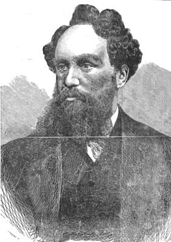
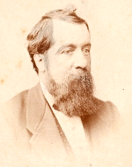
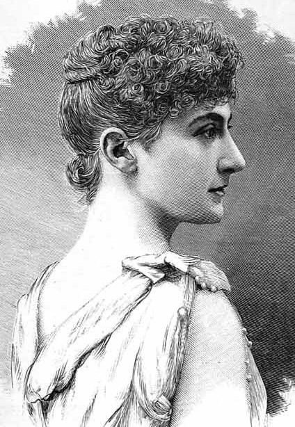

The children of Thomas Hingston and Margaret were:-
The children of Thomas Hingston and Mary were:-
The children of John Hingston and Susanna Pinhay were:-
The child of John Hingston and Joanna Damerell was :-
The child of Richard Hingston and Mary was:-
The child of John Hingston and Ann Rall was:-
The children of Richard Hingston and Mary Dinnis were:-
The child of John Hingston and Mary was:-
The children of Richard Hingston and Grace (as listed in the 1851 census) were:-
9. JOHN HINGSTON, born 23 May 1820, the son of 6. Richard Hingston and Mary Dinnis, a carpenter who married SUSAN JANE BAKER, of Halwell, Jun Qtr 1844, who was born about 1826.
According to the 1851 census they appear to have had at least one child:-
34. RICHARD HINGSTON, baptised 23rd Nov 1828 (our4bears says 21 Jul 1828) at Blackawton, the son of 8. Richard Hingston and Grace Collins Oldrey. In 1841 living with his Hingston grandparents. He married KETURAH MARTIN in Kingsbridge Dec 1856 but they seem to have had children in London. Keturah may have died in 1882 in Kingsbridge aged 51 (so born 1831). She was described as a widow in 1871 and 1881, living with her father Thomas Martin at the New Inn in Stoke Fleming. I can't find this on the map but it seems to have been next to Chapel Lane and the National School. He was 65 and described as an Innkeeper and Farmer. Also there was his wife, Betsy aged 70, an unmarried daughter Sarah, 33; Keturah, widow, 40 and Gustavus H, a scholar, 7. There is no sign of the other children. There was one death of a Richard between 1863 and 1871 for a Richard born 1828 and died 1866 at Blackawton. (Interestingly, in 1881 there was an Anthony Hingston from HH#45 living with his sister's family at the London Inn in Stoke Fleming.)
Possible children for Richard and Keturah are
10. JOHN OLDREY HINGSTON, baptised 20 Jun 1838 at Blackawton, the son of 8. Richard Hingston and Grace Collins Oldrey. In the 1851 census he is described as an errand boy at the Vicarage House (ie. KINGSTON John Serv 12 Errand Boy DEV Blackawton). John is listed as a Builders Foreman in the 1871 census. John seems to have married twice; somewhat confusingly, both his wives had the same christian names. His first wife was ELIZABETH JANE COLTON who he married in Sep Qtr 1860 at Kensington in London, but according to the 1871 census she was from Blackawton. He secondly married ELIZABETH JANE DURHAM in the Jun Qtr 1888 at Headington near Oxford, born about 1840 and ? died in 1893. In the 1891 census she is listed as being born in Oxford
The children of John Oldrey Hingston and Elizabeth Colton (as listed in the 1871 census at Colney Hatch, Middlesex, and the 1891 census at Forthampton, Gloucestershire) were:-
Also living with the family in 1871 was Eliza Cottam age 19, Dressmaker (Spinster), who was noted as the sister in law born in Devon - Blackawton.
13. GEORGE OLDREY HINGSTON was born about 1847 in Blackawton, the son of 8. Richard Hingston and Grace Collins Oldrey. and died sometime after 11 Jun 1905. He married THURZA HILLS CATTAWAY October 19, 1874 in Parish Church of St. Jude, Grays Inn Road, St Pancras, London daughter of James Cattaway and Sarah Hills. She was born 13 Dec 1851 in Laindon, Essex.
The registrations for this family and that of his brother John, appear to be the only entries in FreeBMD in Edmonton. There is though the death there in Sep Qtr 1892 of an Esther Hingston aged 89 (so born about 1803). Who could she be? There is a possible second marriage of 13. George's father 8. Richard to an Esther Bassett at Marylebone listed in FreeBMD for Sep Qtr 1861 but no obvious death of his first wife Grace. This needs to be checked in the census records.
The children of George Hingston and Thurza Cattaway are:
Possible children:-
The children of Richard Hingston and Annie Louise (as identified by one of their grandsons in 2004) were:-
14. GEORGE OLDREY HINGSTON was born Jun 1881 Qtr (Edmonton District - FreeBMD) in New Southgate, Middlesex, and died before 25 Dec 1935. He married MARTHA JANE EDWARDS June 11, 1905 in St. Jude's Church, Kensal Green, London, daughter of John Edwards. She was born Abt. 1882 and died 26 Nov 1955 (where?).
The children of George Hingston and Martha Edwards are:
This line was originally supplied to me by Charlotte Hingston (charlotte@fairburn-estate.co.uk) and Sandra Robinson (steve1964@blueyonder.co.uk) but also includes other published information about Edward. However, John Reynolds pointed out some discrepancies with the children of Edward Peron Hingston which led me to check the records more thoroughly. I now believe that the records for EPH, his siblings and his children are accurate, but I am not convinced that the link back to Devon is secure.
I have also added in elements from King's tree on the LDS microfilm. However, the early entries in that tree disagree with the information shown here and elsewhere on this site so I have listed it as a separate section below. I have numbered the elements in this segment as though they were part of Tree HO but it is not clear if they are connected.
Their children were:-
31. PHILLIP WILLIAM(S) HINGSTON would have been born about 1770. He was originally shown at the head of a separate tree HY but I now believe him to be the son of 27. Richard Hingston and his wife Susanna. Philip married twice. His first wife was ANN ST JOHN; they married on 14 Aug 1785 at St George, Hanover Square. Ann was buried 30 Aug 1789 in Whitefield's Burial Ground, Camden. (This contradicts WEH who has her marrying Philip, son of HH#40) They had one child:-
This is the same line as mentioned in Odds and Ends entries 3. and 37. Dr David Hingston <dlh@xtra.co.nz>, Earl Hingston <hingstonart@iprimus.com.au), Bob Wright <rlw@xtra.co.nz> (whose email no longer works - if anyone knows it, please contact me) are all descended from this line but in most cases I do not know where they fit in. If anyone can fill in gaps (dates, locations, spouses, occupations, stories etc) please contact me.
The children of Phillip and Easter were
20. JOHN (WILLIAM) HINGSTON (1423 in WEH) was born in about 1763 in Blackawton or Dartmouth and is believed to be the son of 27. Richard Hingston and his wife Susanna. . He is known to have married twice. Several sources, including WEH, talk about his first wife being Mary Tucker but these are wrong as the baptismal records of his children show that his first wife was called JANE. Additionally, although there was a marriage between a John Hingston and a Mary Tucker in Dartmouth St Saviour (DFHS index), the births here of all the children precede that marriage, which took place on 24 Apr 1806. From the known ages of the children it seems that they must have been married by 1791. There is no suitable marriage in the DFHS index so even if he was born in Devon it is likely that she wasn't. She may have been a nonconformist because their children were baptised in the Providence Chapel rather than the parish church. Jane Hingston died age 57 at Frederick St and was buried 16 Nov 1821 at Bunhill Fields. So she would have been born about 1764.
Note that an alternative (and conflicting) version of this family is shown below.
Their children are believed to have been:-
There is an Ellen Meliora Hingston who is included in some versions of this line, but she is in Tree HP as the daughter of HP#10 John Hingston and his wife Mary Ann, so should be discounted.
John then remarried (when he used the name John Williams Hingston), SARAH MORTIMER on 28 May 1823 at St Pancras, London; she had been born in Ipswich in 1787 (so was about 25 years younger than John). John was a carpenter, and at the time of the baptism of Ebenezer they were living at Mornington Cottage. John died 28 Jan 1852 in St Pancras (FreeBMD) and was buried 4 Feb 1852 aged 89 (which implies he was born in about 1763) and Sarah died in 1872 in St Pancras (FreeBMD).
John and Sarah had at least two children:
32. FREDERICK HINGSTON was born in 1806 in London, the son of 31. Phillip Williams Hingston and his wife Easter Neate, and married CHARLOTTE GEAR in 1835. In 1849 the family sailed on Queensland's first emigrant ship Fortitude. Frederick died on Stradbroke Island (Brisbane) of Peritonitis on 19 May 1876. Charlotte was taken by her son Frederick to New Zealand where she died 8 Jun 1888 and was buried in an unmarked grave at the Whakapouaka cemetery in Nelson.
Frederick and Charlotte had several children
23. JOSEPH HINGSTON was born 11 Feb 1799 at 8 Little Charles St, St. Pancras, almost certainly the son of 20. John Hingston and Jane. Joseph lived in Stanhope Gate, Regents Park and also had a residence near Ramsgate. He was a land and estate agent with offices in Park Street, Camden Town and was agent for Marquess Camden and also for the impecunious Earl of Southampton (probably 3rd Baron Southampton - there was no Earldom). He lent money to the latter on security for lands in the Regents Park area which was then being developed. The property defaulted due to lack of payment and Joseph took possession of some of the land. He made his fortune by building on the land, which included Regents Park Road, St Mark's Crescent, Ferdinand Street & Place, Haverstock Street & Place and Park Street (all this property eventually went to his son Charles). Also Mornington Crescent and other parts of Camden Town (which became John's). Joseph was a Churchwarden at St Pancras Church. He died 8 Dec 1864, and is buried at St Pancras Cemetery, Finchley, in a family vault (in his 66th year); he was described as living at 1 Stanhope Terrace, Regent's Park [The street currently listed as Stanhope Terrace is in Bayswater - this may refer to Stanhope Street which is close to Regents Park]. When Joseph died it is believed he was worth between £150,000 and £200,000 (equivalent to about £15 million at 2010 prices). His will went into Chancery as it offended against the law of perpetuities (meaning it must have included clauses that would have had effects long after he had died). Nearly all the estate was land and residential houses. John, the eldest son, was heir-in-law and the Court gave him a larger share than Charles.
He married firstly MARY PARNELL. Family memories are that she was buried at St. Giles-in-the Fields, off New Oxford St, although on Joseph's memorial in St Pancas graveyard is is stated that she died 23 Feb 1830 and is buried at St Martin's in the Fields, Camden Town.
Joseph and Mary had two sons:-

At the time of the 1841 census he was living at 15 Caroline Street East, St Pancras (now Carol St) with his parents John, aged 75, a Cabinet Maker and Sarah, aged 53. He was listed as Ebenezer, age 17, which if accurate implies he was baptised when he was two years old. Even if he was 17 his job as an Anatomical Artist was remarkable; presumably this involved making images of anatomical specimens, or recording operations, in the way that a photographer would do today, and he must have had a precocious talent to do this so young. The profession makes sense of the suggestion, in reports of his funeral, that he was intended for a medical career. He was studying at King's College Hospital, which had only been founded in 1840, and at the time was housed in the disused St Clement Danes Workhouse located at the junction of Carey St and Portugal St. Its move to its present location in Denmark Hill did not take place until 1913. He was studying under Robert Bentley Todd, one of the founders of King's College Hospital, after whom one of their current wards is named.
However, Ebenezer blotted his copybook, and must have been thrown out of the hospital, because on 28 Jan 1845 he was imprisoned for 1 month, with hard labour, by Middlesex Assizes, for larceny. He had pleaded guilty to three indictments for stealing books, and other articles, the property of students and lecturers of that institution, valued at £4 10s. He was reported to be a young man of great surgical talent, who had been assistant to Dr Todd, one of the Physicians and Lecturers at King's College. He was strongly recommended to mercy by Todd and the other prosecutors.
At some time, possibly as early as 1842, he turned to a career in literature, writing essays, tales and poems for Chambers' London Journal. William Tinsley (1830–1900), who was a noted Victorian publisher wrote in his autobiography, Random Recollections of an Old Publisher, wrote that "Early in life Hingston wrote 'blood and thunder' stories for the late Edward Lloyd, proprietor of Lloyds Weekly Newspaper and The Daily Chronicle. At that time Mr. Lloyd had an office in the neighbourhood of Shoreditch, where he sold cheap literature for the million. He had a staff of authors, to whom he used to give a certain number of sheets of white paper, and each author had to write a story on the paper and deliver it before receiving payment. When Hingston was writing stories for Lloyd he found out by accident that he was giving too much writing for the money he received. He saw that his brother authors wrote as much conversation as possible, and made their lines very short; whereas Hingston had filled in all solid matter, and by so doing was giving half as much work again for the money as any of the other authors. 'I did not do it again,' said Hingston." EPH certainly wrote The True and Particular Story of King Midas published in August 1844, in the Illuminated Magazine, which was written as a long poem. This certainly predates his conviction for theft.
According to Dick Collins, who has produced modern editions of the Penny Dreadfuls, E.P. Hingston lived in Paris and financed a comfortable bohemian life-style by writing Penny Dreadfuls for Edward Lloyd, the publisher of the People’s Periodical and Family Library. He notably wrote The Confessions of a Deformed Lunatic, and was the author of Helen Porter, or the Mysteries of the Sewers of London, which came out in book form in 1847, having previously appeared in penny parts. Collins says that Hingston is a fair candidate to be the original author of The String of Pearls, which is the story of Sweeney Todd, the demon barber. It first appeared as a weekly serial in The People’s Periodical. The first episode came out on 21 November 1846, and ran for eighteen weeks. Collins draws attention to the similarities between this story and the plot of the later story of Dracula. The original tale of Sweeney Todd is usually attributed to Thomas Peckett Prest, with later additions by Rymer, (see Helen Smith article) but Collins argues that Hingston is a more likely candidate to be the author.
If Hingston was in Paris in 1846/47, it is possible that he returned to London at the time of the February Revolution against King Louis Phillipe in 1848. Certainly by Dec 1848 he was managing the exhibition at the Egyptian Hall in London of John Banvard's panoramas of the Mississippi River. These were paintings showing the banks of the river, as continuous strips, and which eventually extended to over 800 m in length. Some were shown to Queen Victoria at Windsor Castle. EPH also managed the exhibition in 1849 of Nile scenery painted by Henry Warren, James Fahey and Joseph Bonomi, also at the Egyptian Hall, which was located in Piccadilly.
EPH led a complicated love life. He may not have been a bigamist in legal terms, but only because he didn't get round to marrying one of the Mrs Hingstons who bore him children. The first was HANNAH HEMMING, who was born at Cripplegate in London. She was probably the girl born 29 Jan 1818, with parents Francis and Hannah Hemming, and christened on 1 Oct 1820 at St. Giles Cripplegate. Cripplegate used to be the northern gate into the old walled City of London and was a poor area. It was largely destroyed in the wartime blitz and is now the area encompassing the Barbican and Moorgate Station. At the time of the 1841 census Hannah was a female servant to Charles and Hannah Davis; he was a publican at the Hole-in-the-Wall tavern in Baldwins Gardens, Holborn, about a mile from Cripplegate.
We haven't been able to find Hannah in the 1851 census, but on 5 Sep 1851 she was back in Baldwins Gardens, at No. 16, where she gave birth to EMILY LAURA HINGSTON. She registered the birth herself and the certificate contains a number of small errors. The Registrar must have written down what he heard, which might imply that Hannah did not or could not check the entry. The surname is spelt Kingston, which is a common mishearing of Hingston. The father is listed as Ebenezer Parry Kingston, a lecturer, while she is listed as Hannah Kingston. There is some doubt about the date - the certificate when issued to me in 2014 said 1856, but the index lists the birth in 1851, which corresponds to the ages for Emily Hingston in subsequent censuses.
Despite Hannah naming herself as "Hingston", there appears to have been no marriage with Ebenezer; in the 1851 census (by which time Hannah would have been three months pregnant) he was one of six lodgers at 15 Featherstone Buildings, St Andrews, Holborn where he was described as a lecturer, aged 28. Featherstone Buildings would be described today as a set of tenement buildings, on both sides of a road off High Holborn; they have long since been replaced with office buildings.
Notably, in both the 1841 and 1851 censuses he was described simply as Ebenezer; Edward and Peron were adopted later. It is worth speculating where his names came from. There are no other Ebenezers amongst Hingstons I know of, except for an older half-brother of EPH, born to John Hingston and his first wife Jane. That Ebenezer died in 1811, aged 5, and Jane died in 1821. It would be unusual for a second wife to agree to naming a child in honour of someone in a first wife's family, so we can presume that the name "Ebenezer" meant something to the father. The "Peron" name is even more unusual. It is not his mother's maiden name, which is often how surnames end up as christian names, and he wasn't given it at his baptism. A search on FreeBMD for Peron as a surname shows only entries in Bethnal Green, which includes Spitalfields, home to many Huguenot families. These were descendants of French Protestants who had fled from Catholic oppression in the 16th and 17th centuries. Many ended up in the poor areas of London, as have successive waves of Jewish, Asian and African immigrants, making the area one of the most cosmopolitan in the city. Records of the Huguenot Society show at least one marriage of a Peron, but we do not know of any connection with Ebenezer. Perhaps he just liked the name.
[It is possible that Hannah may have been married before she became involved with EPH. Hemming is a fairly rare name but FreeBMD shows a Hannah Hemming marrying in the Shoreditch district of London in the Sep Qtr 1843; the four potential husbands are William Payton, William Rayner, John Shannon and Wheeler Stephens. So it is possible that she was using her husband's name in the 1851 census. I can't find any marriage listed for Ebenezer or Edward to any of these possible names around 1850.]
EPH's second relationship was more formal, since on 29 Jun 1857 he married ELIZABETH STAGE at St Luke's Chelsea. She was the daughter of John Stage, a builder, and had been born in 1831 in Midlothian, Scotland. By this time EPH was calling himself Ebenezer Edward Peron Hingston and describing himself as an artist; he named his father as John Peron Hingston, a builder. Elizabeth Stage had a sister Margaret who was an artist whom, it has been suggested, was trained by Daniel Maclise. Maclise drew some (or all) of the illustrations for Dickens' "A Christmas Carol" and there is also a family suggestion that the Ebenezer of that book was named after Hingston, although there are many other suggestions. If it was meant as a caricature it is not a particularly flattering one. His first child with Elizabeth, JAMES AUSTRALIAS HINGSTON was born a few months afterwards.
But despite his marriage, EPH did not give up on his relationship with Hannah, because their daughter, ELIZABETH MARY HINGSTON was born at 5 Portland Place, Bethnal Green on 20 Mar 1858, almost exactly nine months after his marriage to Elizabeth. Once again Hannah was the informant for the registration of the birth and named Peron Hingston, a Literary Writer, as the father. Elizabeth is almost certainly the girl who later changed her name to Lilian Mary Hingston when she became an actress.
EPH managed John Henry Anderson from the middle of the 1850s until 1862. He performed on the stage as "Professor Anderson" and was known as the "Wizard of the North" and he also fancied himself as an actor, his favourite role being "Rob Roy". Anderson was quite a character and it is interesting to speculate on how the relationship between the two men worked, but it is difficult to get the truth about the world of magicians. Their stock-in-trade is deception of their audience, and this seems to spill over into their relationships with each other.
There are a number of biographies of Anderson (1814-1874). EPH himself published one in 1858 (E.P.H. Biography of Professor Anderson: The Great Wizard of the North) but I have not yet read a copy. This was incorporated into extended versions of the life of Anderson that appeared over succeeding years, sub-titled (Sketches from his Note Book). Anderson's life was serialised in The People's Journal (The Wizard of the North: Life Story of John Henry Anderson, published in 12 sections between 1 June and 17 August 1901); the author was not named and it seems unlikely (on style grounds alone) that it was based on EPH's notes. A more recent biography by Constance Pole Bayer (CPB), a relative of Anderson (The Great Wizard of the North, John Henry Anderson, 1990) is something of a hagiography and appears to have a number of errors, many of which have been pointed out in the latest book by Edwin Dawes (John Henry Anderson: The Great Wizard of the North & His Magical Family, 2014) Dawes also published articles about EPH in The Magic Circular (Vol 100, pp.90-93 & pp.130-133 (2006)), the in-house magazine of the Magic Circle.
Anderson had been performing since 1831, attracting large audiences, handling his own publicity and apparently without the help of a manager. He was popular with audiences, but not with critics: Dawes quotes one as saying "he lacked artistic merit, he was not adept at legerdemain (i.e. sleight of hand) and he had no creative genius" and "his passionate love of acting was not matched by his histrionic talents". But he must have been an accomplished showman; many of his acts made use of specially-made equipment, with lots of patter to draw audience's attention away from what was actually going on. Some illusions were developments of the work of others, and the French magician, Robert-Houdin, claimed that Anderson used ideas that had been stolen from him by his own trusted mechanic, Le Grand. CPB says "He [Robert-Houdin] was a remarkably slick performer. To cover the fact that most of his illusions, even if amplified and more dexterously performed, were not novelties in London he cried out the louder that all had been invented by himself, some even specially for this occasion" (Barry Duncan: The St James’s Theatre (1964), p.80.), while programmes of the times show that Hermann and Robert-Houdin presented versions of the same acts as Anderson had given for some years: the Cabalistic Clock, the Orange Tree, the Safety Casket, Fans and Cannon Balls. The American magician Harry Houdini, who changed his name from Ehrich Weiss in honour of Robert-Houdin, later came to believe that the Frenchman's claims were unfounded and presented very detailed descriptions of several of the disputed illusions, showing that Anderson was performing them before Robert-Houdin had even started his career (The Unmasking of Robert-Houdin by Harry Houdini). Later, though, he is said to have regretted being so outspoken in his condemnation of the man whose name he took.
The first evidence of EPH working with Anderson is a reference in the Manchester Courier on 27 Jan 1855. He seems to have done more for Anderson than simply organising his tours. EPH is said to have produced "some of the most attractive programmes ever penned", and apparently invented some of Anderson's best illusions that depended on the application of science; it isn't clear whether any of the new tricks were based on secrets stolen from Robert-Houdin, whether they were attempts to mimic illusions that were performed by Robert-Houdin and others, or whether they were completely novel. It seems to be common practice for magicians to see an illusion performed by others and then work out for themselves how it can be carried out.
In 1855 Anderson spent a long period at the Lyceum Theatre in London, and then transferred to Covent Garden. Takings were lower than he hoped, partly because the Crimean War with Russia had depressed the national mood. After 60 days at Covent Garden he finished with a three day festival in March 1856 that climaxed in a masked ball, during which the theatre caught fire. EPH had the presence of mind to rescue the day's takings from the theatre office, but he could not save Anderson's props and the Wizard was bankrupted. The property of other companies, much of it uninsured, was also lost.
Anderson must have obtained money to reacquire his props, which were central to his act, but in an attempt to resuscitate his fortunes he planned an extensive tour. With members of his family, some of whom performed with him on stage and an entourage that included EPH, he sailed from Liverpool, as reported in the Australian and New Zealand Gazette, on the Black Ball clipper Monsoon on 11 Mar 1858, nine days before EPH's daughter Elizabeth was born to Hannah. It was reported that Anderson was engaged for twelve months (presumably by George Coppin, a comedian and theatre impresario in Melbourne) for which he was to receive £10,000. "In addition to the usual apparatus used by the Chief of Wizards, he has had a large quantity of the most ingenious articles manufactured expressly for this visit to our antipodean friends at an expense of £3,800. He contemplates visiting India and California before his return to England." Dawes shows that they sailed direct to Melbourne, arriving in the Monsoon on 10 Jun 1858.
Anderson performed in Melbourne for some time, but it is likely that EPH went to Sydney to prepare for Anderson performing there, because a letter appeared in the Melbourne Argus on 27 Oct 1858 from EPH reporting that he had just arrived in Melbourne from Sydney, aboard the Wonga Wonga, and describing the gold fever that was gripping Sydney as a result of the discovery of gold near Port Curtis in Queensland.
Anderson had a major disagreement with George Coppin, who wanted a larger share of receipts, and Anderson was forced to "sacrifice an exhorbitant amount of money". With the assistance of EPH, he explored new centres in other parts of Australia. He headed first for the rich goldfields of Ballarat, then in Nov 1858 they went to Tasmania before taking over the Lyceum Theatre in Sydney at very high cost and drawing great crowds for five weeks over Christmas 1858. Meanwhile, when the Prince of Wales Theatre was available, Anderson took it over for the production of his favourite, Rob Roy.
They toured Newcastle, Maitland, Penrith, Bathurst, Sydney and Bendigo, ending up in Melbourne where they had a farewell dinner before leaving on 6 Sept 1859 for San Francisco, on the Milwaukee. The party stopped at Tahiti for provisions and from 1st Nov to 11th Nov they were at Honolulu, where Anderson performed for the Royal Family. They finally arrived in San Francisco on 7 Dec, as reported in The Polynesian.
On Christmas Day 1859 the Wizard opened at Maguire's Opera House, the chief theatre of San Francisco. He remained there until the end of January 1860, when they left for Sacramento, subsequently going up country to Marysville, and from thence on a long tour of nearly 1500 miles among the mountains up to the snowy heights of the Sierra Nevada, travelling eastward among the Mormons of Utah, and northward to Oregon and Washington. After a brief return visit to San Francisco he set sail southward, crossing overland at Panama, thence on to New York. There, however, he could find no vacant building suitable for a performance so he went to Boston. A month's success followed. Next there was a brief visit to New Bedford, and a journey back to New York, where business was bright, before proceeding to Philadelphia.
For a time Anderson was highly successful. EPH had made advance bookings for a southern tour but the Civil War broke out in April 1861 with the attack on Fort Sumter and that tour was cancelled; there was little prospect of success for a man calling himself "The Wizard of the North"! Instead, they went to Canada (Ontario) in the summer of 1862 and performed in the Mechanics Institute, Toronto for a week from 24 Sep 1862 during the Agricultural Exhibition and then at Whitby (east of Toronto) for a couple of nights soon afterwards. Artemus Ward also appeared in Toronto in October 1862, but they may have met already (see below).
It must have been around this time that EPH met the Hingstons in Buffalo. WEH wrote "At one time while travelling as advance agent for Anderson the "Wizard of the North" passed a Samuel Hingston of Rochester (the writer's uncle) and stopping turned around saw that Samuel H had done the same. Both walked up to each other and Mr E.P.H. held out his hand and said "Say stranger, what may your name be. Mine is Edward Hingston". "And mine" replied my uncle, "is Sam Hingston". They shook hands, had a pleasant afternoon together and found they were related through several generations apart yet the family likeness was so great that each noticed it. Mr E.P.H. never came near Rochester or Buffalo without letting the family of Sam, John and William know of it. He also travelled with Artemus Ward (Brown) as his agent and they became very much attached to each other."
Anderson was growing concerned by the Civil War casualty statistics and cancelled future plans for Canada and returned to NYC, but he was heavily in debt. Heavy travel costs, salaries and other expenses had taken all the receipts. Bayer reports his statement: "My outlay was in excess of my profits. In this strait I immediately called my creditors together, intimated to them my intention of returning to England, and they satisfied to receive my promissory notes at six, nine and twelve months for the debts I had incurred with them". It is likely that EPH was one of those to whom he owed money. Bayer reports it as a heartbreaking time for the Wizard. He knew that he might never see again those he loved so deeply, (presumably a reference to Antonia and their two children). Anderson departed NYC for Liverpool on 16 Dec 1862 and it seems that EPH remained in America.
EPH isn't listed in the 1860 USA census which took place in June although by that time Anderson and his family were in NYC; it is possible that EPH was travelling or was in Cincinnati where he may have been planning to live. His wife Elizabeth wasn't with the party in Australia but she must have come over to America because their son JOHN HINGSTON was born in about 1862 in Cincinnati (birth date not known but inferred from the 1871 UK census) and was given the middle name 'Cincinnatus'. One of EPH's obituaries talks about him having been a pig-farmer in Cincinnati and this is the most logical gap in his career. It was also the home of Avonia Jones, who he managed for a short time.
In his book "The genial showman, reminiscences of the life of `Artemus Ward'", published in 1870, EPH describes meeting Charles Farrar Brown after a train journey to Cincinnati in 1861. They met again by chance in Cincinnati some time in 1862 and travelled together on a steamer down the Ohio River to Louisville in Kentucky, where they went their separate ways. Brown was not then working as a lecturer but was making his living as a journalist.
EPH also met a German named Bandmann with a taste for the stage, and a musical wizard named Robert Heller. He accepted Heller's proposal to become his agent sometime during 1862, knowing of Anderson's impending departure from America, and prior to becoming Ward's agent, and thus worked for him during 1862-63. Price, in Magic (1985), observed that although Heller had a reputation of being a great wit, he was not able to capitalise on this talent until Hingston suggested that he adopt the style of Artemus Ward. Heller opened his Salle Diabolique at the French Theatre on Broadway in April 1864 to achieve his greatest success to date.
By 1863, Brown was performing as "Artemus Ward" on a fairly well-developed lecturing circuit. He would not have been in competition with Heller; one was performing as a raconteur while the other was a magician, so there would have been no conflict of interest. But Brown had been invited to perform in California and needed an agent who knew the state, and since EPH had been there already he took him on. Brown sailed from New York on 13 Oct 1863, preceded a month earlier by EPH, who described the journey in "Artemus Ward (his Travels) Among the Mormons".
"We left New York by steamer, crossed the Isthmus of Panama by railway, steamed up the Pacific to San Francisco, then went by steamboat again to Sacramento, then by railroad to Folsom and next by coach to Placerville, where we changed our conveyance for what they please to call a stage in California, but which in England we should describe as a spring van seated, with a covered top to it and canvas or leather blinds on each side a form of conveyance common enough in the States and in Australia, but altogether unknown I believe in the British Isles. In a hideous apparatus of this description we jolted on night and day for six hundred and thirty miles from Placerville to Salt Lake City. Occasionally we obtained relief by being transferred from the coach, as they would facetiously persist in calling it, to a sleigh formed of rough pine wood like a very broad French egg box, far too shallow, with no cover, placed on huge runners and drawn over the ice by four gaunt maniacal mules driven by a jovial Jehu, who regarded a capsize as the most ordinary of every day events, and a roll down a mountain side as the most exhilarating pastime in the world. Six hundred more miles of similar coach and sleigh brought us from Salt Lake to Denver City in Colorado, and a third six hundred mile ride took us across the plains through camps of Sioux Indians, past herds of buffaloes, and past subterranean cities excavated and inhabited by prairie dogs, to Atchison on the Missouri River whence we crossed the State of Missouri by railway to St Louis on the Mississippi and then through Illinois, Michigan, Upper Canada and New York State, home again to New York. In all a journey of over 10,000 miles of which about 7000 was by water transit and about 3000 overland. To those who seeking pleasure contemplate doing the land route in winter as we did it I would give the same advice that I think Artemus would and say - don't." They arrived back in New York on 3 Apr 1864.
In Dec 1863 they were reported to have enjoyed several days of revelry with Samuel Clemens (Mark Twain) when they passed through Virginia City, Nevada where Clemens was living at the time. There are several other anecdotes about Hingston in Charles Farrar Brown's books,"The Complete Works of Artemus Brown".
While with Ward in California, EPH met and became associated with his third magician, John Simmons (c.1835-1899), who had left the Navy in 1862 to become a professional conjurer, working under a variety of names but eventually adopting the title of Dr Lynn. Like Anderson, Lynn had been in Australia, having arrived at Melbourne in January 1863 in the guise of 'Washington Blythe, the Great American Illusionist' and after touring on that continent proceeded to Shanghai and Japan with Robert Sparrow Smythe's concert party. Lynn provided a version of these events in his book The Adventures of the Strange Man (1878). Lynn arrived in San Francisco from the Orient in December 1863 where he met Hingston and Ward and it is clear that they both gave Lynn advice.
It seems likely that EPH and Brown stayed in the US, but EPH seems to have maintained contact with Lynn and Heller. Dawes says that EPH returned to England in 1865 (on 4 Jun 1865 the Detroit Free Press announced that "E. P. Hingston, dramatic agent, has gone to England to attend to business for Miss Avonia Jones, who will shortly follow him and play in London.") and the next year Artemus Ward joined him. Brown [writing as Artemus Ward] also wrote articles for the humorous magazine Punch. But it was to be his last trip since he contracted tuberculosis from which he died on 6 Mar 1867 in Southampton. He wrote a will in England, with EPH as his English Executor, and there were newspaper reports at the time claiming that EPH had mismanaged the estate (or even stolen from it). This was exacerbated by the legacies of £100 that Ward had made to each of EPH's legitimate children, James (then aged 9) and John (5), which were considerable sums to leave to children. But an article written by Charles O. Stickney in the Boston Sunday Globe some 20 years later (on 30 Dec 1888) showed that EPH had acted properly and had submitted all the accounts for approval by the US Consul; he concluded that there was much less money to Brown's name than had been popularly supposed.
The death of Ward must have led Sam Clemens (Mark Twain) to realise that EPH no longer had an employer and he tried to hire him as his agent, but EPH had apparently decided to remain in England, taking up the job of manager for Messrs Spiers and Pond of their establishment at Margate, known as "The Hall-by-the-Sea''. Their business largely consisted of running railway refreshment rooms and the Margate facility was a rather basic conversion of the original London Chatham and Dover railway station that was run as a dance and concert hall. The venture was not a success and was sold in 1870. The birth of another daughter, DORA ROWENA HINGSTON is recorded in the Thanet district, which includes Margate, in Dec 1867.
In 1868 Hingston made arrangements for a cricket tour of England by an Australian aboriginal cricket team.
EPH returned to London and in 1870 was Stage-Manager at the St. James's Theatre. In the 1871 census the family were recorded as living at his final home at 49 Crowndale Road, St Pancras. He now called himself simply "Edward", age 46, and an "Author & Book Writer". His wife Bessie was 39, born Scotland, with children James, 13, born Middlesex, John, 9, born United States and Dora, 3, born Kent. They also had a 17 year old servant, Ann Halley. The reference to writing relates to his authorship in 1870 of "The Genial Showman" in two volumes, an account of his travels with Artemus Ward (available online). EPH also wrote a preface to Hottens' pirated edition of Mark Twain's "Innocent's Abroad", which caused a split with Clemens, although Sam returned the favour by later using some of the Genial Showman material in his own lectures. Tinsley writes of the "Bohemia of Camden Town" of about 1870, which he named "Twopenny Town", of which two leading lights were E.P.Hingston and his wife. They were "first night theatregoers". "The Bohemia of Camden Town was often very entertaining, if not always wise." and specifically about EPH: "He was a very intelligent fellow; a capital impresario. Nothing came amiss to him to manage, from a panorama to Italian opera. Hingston, until his health gave way, was ever on the move. He had a good deal of what is called "Yankee 'cuteness" in his nature; but he was a kind, genial, fine-hearted man, and was never too proud to listen to advice, especially when he saw there was good to come of it."
EPH moved again to manage The Opera Comique from October, 1872, to December, 1873. This theatre had opened in 1870 and was shoddily built because its owner was anticipating compensation when the area was demolished to build the street known as The Aldwych; this wasn't to happen for another 30 years. It was largely underground and the patrons had to enter through long tunnels, which would have made it a death trap if it had caught fire, but fortunately they got away with it. It became home to the Parisian company, Comedie-Francaise, who made the theatre their base while exiled from Paris during the Franco-Prussian War, but their repertoire did not prove popular, which may be why EPH left. It later became home to Richard D'Oyly Carte's company who put on the operettas of Gilbert and Sullivan. When EPH left, the artists apparently put on a benefit for him on 9 Dec 1873 and there is a letter from Sam Clemens refusing to take part, still smarting from EPH's involvement in the pirated book.
Spiers and Pond then opened the Criterion Theatre on Piccadilly Circus on 21 Mar 1874, and Hingston was appointed their business manager. The opening programme consisted of "An American Lady" written and performed by Henry James Byron and a piece by W. S. Gilbert, with music by Alfred Cellier, entitled "Topsyturveydom". The event apparently did not make much of an impression on Gilbert who never saw it performed. EPH's health was failing by this time and he was compelled to resign his appointment, but it seems there was another benefit concert given on his behalf at the Drury Lane Theatre on the 18 Mar 1875, which raised more than £800.
Edward Peron Hingston died on 9 Jun 1876 at Crowndale Road, Camden Town and was buried 9 days later at Kensal Green Cemetery, in a family plot purchased by his brother James. The funeral was reported in The Era, a newspaper that specialised in theatrical matters. Mrs Hingston (presumably Elizabeth) and 2 sons attended, but there was no mention of any daughters, including Dora who was legitimate, although she was only about 9 years old so might have been regarded as too young.
EPH's will does not tell us a great deal. "This is the last Will and Testament of me Edward Ebenezer Peron Hingston of No 49 Crowndale Road Camden Town in the County of Middlesex Gentleman I give devise and bequeath unto my dear wife Elizabeth Hingston All my property estate and effects whatsoever and wheresoever and whether in possession reversion remainder contingency or expectancy real and personal to hold unto and to the use of my said wife her heirs executors administrators and assigns for her and their own absolute use and benefit for ever And I appoint my said wife sole Executrix of this my will and hereby revoking all former Wills and Codicils by me at any time made I declare this to be my last Will and Testament In witness whereof I have hereunto set my hand this sixth day of April one thousand eight hundred and seventy six."
The will was witnessed by Mattw Hanson, Clerk to W J H Webber, Solr, 105 Great Rupell (Russell?) St, Bloomsbury, and David Skay Booth, 18 Wallington (Wellington?) Street, Woolwich, Engineer. The estate was valued at less than £450 and probate was granted to "Elizabeth Hingston of No 49 Crowndale Road, Widow of the Relict" on 29 Jun 1876.
EPH's women both survived him but died in 1895. Elizabeth died aged 64 in Pancras district in the March Qtr (FreeBMD), while Hannah's death was reported in The Era. She died on 23 Nov 1895, "aged seventy-seven, widow of the late P. Hingston and beloved mother of Emily Carter and Lillian Hingston-Lewis". FreeBMD says she died in Wandsworth so she must have left Buckingham St by then and was probably living with her daughter Emily in Tyneham Road.
There are a number of newspaper reports referring to his life and death.
If our reading of the situation is correct Ebenezer Edward Peron Hingston's children with his wife Elizabeth Stage were:-
What of his other family with Hannah? She had adopted the name Hingston by the time of the birth of her first child at the end of 1851, possibly in anticipation of marrying Ebenezer. In the 1861 census, Hannah was recorded as living at 37 New Church Road (now called Balcorne St), South Hackney. The name was recorded as Kingston (and the original sheet very definitely shows a K not an H) but the entry was written by the enumerator. Hannah was shown as a Wife and Head of Household, and a Charwoman, born Cripplegate, Middlesex. Living with her were her daughters Emily, age 9, born Holborn and Elizabeth, age 3, born Bethnal Green; both were described as scholars.
By the 1871 census they seem to have gone up in the world. Hannah was living at 14 Buckingham Street, St Martin in the Fields, Strand, age 48, a widow, with her daughter Elizabeth Mary, age 13. The surname was spelt Houghton but this is almost certainly the right person, because they are still there in 1881 and 1891 and were then listed as Hingston. Her description of herself as a widow would not have been checked and it was a convenient way to explain how a single woman was living with children. Hannah was supposedly 60 in 1881 and 73 in 1891. Elizabeth is listed as age 22 and a female clerk in 1881, but as age 28 and an actress in 1891, by which time she had adopted the name Lilian. In all three censuses Hannah is shown as being born in Cripplegate, while Elizabeth (Lilian) was born in Bethnal Green. 14 Buckingham Street, where Hannah was the resident housekeeper, is an interesting house. It is in the heart of London's West End and very close to the theatre district but even then the street was largely composed of family homes that had been converted to offices. The street runs down from The Strand to York Stairs, which was once the water gate to York House that stood on the site; this had been the London home of the Bishop of Norwich. The old house was demolished and the area redeveloped at the end of the 17th century; the land beyond York Stairs was reclaimed in 1862 to form Victoria Embankment Gardens when the Thames was embanked. The embankment also included the District Line of the London Underground and Bazalgette's Northern Interceptor Sewer built to remove sewage from London and to clean up the Thames. No 14 is the last house, adjacent to York Stairs. It is now a listed building and English Heritage describes it as "Large end of terrace town house. c.1679-80, rebuilt after fire in 1684 and again in 1791-92, originally part of Barbon's development of the York House estate. Brown brick, concealed roof. 4 storeys and basement. 4 windows wide (left hand bay blind) and long 10 window return towards river". Samuel Pepys lived in the previous house on the site from 1688 to 1701 and he was followed by the Earl of Oxford; the house has a commemorative plaque to this effect by the front door. By the time Hannah was living there it was being let as chambers, and with its riverside views was much favoured by artists. Hannah had her own rooms, probably in the basement.
The children of Ebenezer Edward Peron Hingston and Hannah Hemming were:-

James gained a well-earned reputation for eccentricity, but he never married and lived for over thirty years at the George Hotel, St Kilda, amid large piles of books and papers in his bedroom. An indefatigable reader, he knew Shakespeare's plays almost by heart and was considered one of Melbourne's great raconteurs. His impact was the more remarkable for his unconventional views and fierce disregard for the dropped 'h', signing himself 'Jay Haitch' in letters to close friends. He came to the notice of the reading public as a travel writer, contributing to a "Guide for Excursionists from Melbourne Dedicated to All in Search of Health, Recreation and Pleasure" (1868) and co-authored "Lorne: The Australian Torquay" (1879) with William Little of Ballarat.
Hingston's travels abroad dated from the mid-1870s. In 1876-7 and again in 1886-7 he took several journeys to many parts of the world, in all taking nearly 4 years. Apparently, while on a journey back to London he was overwhelmed by the beauties of eastern scenery in Ceylon (Sri Lanka). He left the steamer and, having discovered the pleasures of travelling light, sent his weighty portmanteaus back to Melbourne. Continuing his travels through India, the Middle East, Japan, China, Cochin-China (the French colony around Saigon), Malacca, Singapore and Java, he wrote a chapter of travel impressions at each destination. The Melbourne Argus cautiously experimented with fortnightly publication of Hingston's articles under the title 'Travel Talk' by 'J.H.' but the articles must have been successful because they also appeared for a period, spreading over years, in the Saturday editions of issues of the Melbourne Age, the Melbourne Australian, the Melbourne Leader, the Sydney Herald and the Adelaide Register.
When, in 1879-80, a London publisher brought out his essays as "The Australian Abroad: Branches from the Main Routes Round the World", in two handsome, but expensive, volumes, Hingston's reputation as a writer was assured. William Inglis & Co., Melbourne, published a single volume edition of The Australian Abroad in 1885. Hingston's witty and richly allusive meditation on travel and the human condition was an immediate success and remained a remarkable record of Asian travel. Through the 1880s and 1890s, Hingston continued his contributions to the Argus but no further books appeared under his name. James was one of the first Australian travel writers, so has attracted academic study of the way cultures develop. David Walker (Travellers to the Orient, Asian Studies Association of Australia Review 12(1), July 1988) has written:-
One of the most detailed of all the travel books was J. Hingston's mighty production "The Australian Abroad on Branches from the Main Routes Round the World" first published in England in 1880 and in its first Australian edition in 1885. In 1879 Hingston spent ten months touring the East. Some of his opinionated, rambling and often witty record of his travels first appeared in the Argus. The book has sunk without trace, along with its author. He is mentioned in Hugh McCrae's "My Father and My Fathers Friends", where he appears as a Cockney-born bohemian with an extraordinary aptitude for lying. McCrae's father found it hard to believe a word Hingston wrote and since The Australian Abroad runs to nearly 400,000 words the scope for untruth was enormous. Yet Hingston's book deserves some recognition as the first comprehensive survey of Asia written from the perspective of an Australian traveller. And for all his verbosity, Hingston's energy, humour and endearing enthusiasm for Eastern travel is always apparent.
The statement about JH's aptitude for lying is a harsh representation of what McCrae actually wrote, which gives an interesting insight into James' character, but it is clear that James was more concerned with the readability of his prose rather than precision of his facts.
WEH reported that in 1900 James heard that his niece Lilian was in South Africa, so he sent for her to come to join him. They then both visited England where she remained, while he returned to Melbourne. He went again to England in the spring of 1902 but was in poor health and died at Exmouth on 7 Mar 1902, and was buried in Kensal Green Cemetery, London, with his parents and brother. WEH said that he was 72 years old at his death (actually 76) and that he left the bulk of his possessions to his niece Lilian, although his Australian DNB entry said that the Melbourne Benevolent Asylum was a major beneficiary of his estate in Victoria that was valued for probate at more than £50,000 and JH's will shows that he left about 1/20th of his estate to Lilian.
W.E.Hingston refers to James in his letter written in 1905. It is the only mention in WEH's study where he speaks ill of a member of the extended family, and is all the more unusual because I don't think the two men ever met. They certainly corresponded in 1895 - we have James' letters to WEH - and there is nothing unpleasant in them. WEH did though meet Lilian in Buffalo and it is possible that he is reflecting what Lilian has said to him. Is he perhaps implying an inappropriate relationship between James and Lilian? "While [at Exmouth] I found that the fall before Mr James Hingston of Melbourne had come home on a visit and brought his niece, Miss Lilian Hingston with him, and that he had died at Exmouth, a few doors above where I was staying. He was first cousin to Mr Hingston-Davey and I am sorry to say a very disagreeable man. He had boarded for 40 years at the one hotel and had occupied the same room all that time. He is the author of "Around the World in out of the way places". He sent me a copy from Australia. Miss Lilian Hingston had been travelling with Olga Nethersole. He left her all his money. The last time we heard of her she was at Nice in S. of France."
James is listed in the Australian DNB.
33. FREDERICK JOHN HINGSTON, born 17 Mar 1837, Islington, London, the son of 32. Frederick Hingston and his wife Charlotte Gear. Baptised 9 Apr 1837 St Martins in the Fields, London. Died 13 May 1904, Nelson New Zealand. Would have been 12 when the family emigrated to Queensland. In 1865 he emigrated further to Nelson in New Zealand. After his father died he returned to Australia to take his mother to New Zealand.
According to Susan Walter, Frederick John married twice. The first marriage is not on the QLD BDM indexes but can be found in the Moreton Bay Courier 1 Jun 1859 where it was reported that Frederick John Hingston married to SUSANNA SARAH BAILEY on 27 May 1859. She was the daughter of Alexander Bailey of Fortitude Valley QLD. She died 8/10/1859. I do not know the name of his second wife.
Peter Hingston <46walter@onetel.com> lists the following children of Frederick. Only abbreviated details are given here until I get enough information to expand these lines into the common format of the other pages. The children would have been born between 1859 and 1880.
24. JOHN HINGSTON (1439 in WEH who has no details about him) was baptised 29 Jun 1823, St Pancras Old Church, the son of 23. Joseph Hingston and Mary Parnell. On 15 Feb 1855 he married LOUISA WILKINS who had been baptised 26 Aug 1836 at St Anthony, Cornwall. She died 9 Feb 1898 aged 62 (MI in St Pancras) when she was described as being of 4 Honor Oak Road, Forest Hill. John died 7 Jun 1916 and is buried in the family vault at St Pancras, aged 93 "A consistant man with fine traits". He was living at 61 Honor Oak Road, Lewisham. The memorial inscription lists a number of children.
FreeBMD shows that there was a Hingston family in Lewes in Sussex between 1867 and 1876. The GRO index shows that the mother of these children was Wilkins, so we can assume the family also had a home there where some of the children were born (and died). This also has the advantage of linking in the Thaxted Hingstons via their son 26. John.
John and Louisa's children probably include:-
25. CHARLES LEVI HINGSTON (1440 in WEH - no details) was born 8 May 1827, the son of 23. Joseph Hingston and Mary Parnell. He married 29 Dec 1852 in All Souls, Marylebone, ELIZABETH REID born Pentland. They moved to Croydon in 1862. She died about 1869/70 and is buried at Shirley Church. Charles died 6 Nov 1899 and is buried at Tedburn St Mary, Exeter. Apparently his second name came about because his father was successful in a legal action against "Levi" at the time of his birth. There is no Jewish connection in the family.
The children of Charles and Elizabeth were as shown below. King shows them all as being baptised at St Pancras Old Church on 30 Mar 1864.
they had
28. JAMES AUSTRALIAS (PERON) HINGSTON was born Dec Qtr 1857 in Chelsea, the son of 21. Ebenezer Hingston and his wife Elizabeth Stage. (WEH lists the eldest child (1435) as Charles Edward Hingston born in London and last heard of in Sydney NSW, but there seems to be no evidence for this name). Family sources say that James went to Australia and travelled a bit. He married FLORENCE MARY MARSH, who according to his uncle, James Hingston, was the daughter of the Harbour Master at Port Darwin. They obviously had a daughter who died young. The Northern Territory Times and Gazette reported on 31 Mar 1888 that James was to be Examiner of Licensed Surveyor's work in the Survey Dept at Palmerston. (Palmerston was the name given to the town, while Port Darwin appears only to apply to the harbour - the town was renamed Darwin in 1911. There is now a separate modern suburb of Palmerston.) He had been appointed as a junior surveyor there in 1882. On 5 Nov 1890 the NSW Police Gazette reported that James Peron Hingston, who had been reported missing in an earlier edition, had been found. This was in a section "Missing Friends", which implies that he wasn't wanted for any offence. In a letter to WEH in 1895, James' uncle (also James) reported that this James was living in Sydney with three children. Although the children are not named in Uncle James will (of 1901), a list of legacies was was deposited with the will and we can infer their names. Their mother was listed simply as Mrs J M (sic) Hingston; she also received a legacy of £500. At the time of the will James was described as being in Tasmania. In 1908 he was on the Electoral Register of Herberton, Queensland. It isn't clear whether James was estranged from his family or simply that his work as a surveyor took him round the country. James Perrin Hingston died in South Australia 7 Oct 1942.
The children of James Hingston and Florence were:
29. JOHN CINCINNATUS HINGSTON (1438 in WEH) was born c. 1862 in the US, the son of 21. Ebenezer Hingston and his wife Elizabeth Stage. He married ELIZA HILL SHAW in Jun Qtr 1892 in Pancras District (London) and had 3 children. WEH said that in 1900 he was working for his brother-in-law Henry Gebhardt. In the 1911 census they were living at "Tantallon", Alma Road, Herne Bay in Kent. John was 46 and a retired merchant, born Cincinnati but British by parentage. He was head of the household, with his wife Eliza age 44 born Midlothian, and two duaghters. Staying with them is Dora's husband Henry Gebhardt. There may be descendants, including Moran Victor Hingston Caplat (1916-2003), actor and General Administrator at Glyndebourne Festival Opera. His obituary in The Independent reported that EPH was his maternal great-grandfather so he was the son of one of John's daughters.
The children of John Hingston and Eliza Shaw were:

An article in The Melbourne Argus on 8 Aug 1890 (probably written by her uncle, James) reported that "The London Daily Telegraph of 28th June last, just to hand, records the highly successful London appearance of a new actress, a niece of Mr James Hingston of Melbourne. The lady, we may say, has had many years of provincial practice in the profession she has chosen, and is no amateur making an attempt at success without previous drudgery. "Avenue Theatre - once more Mr Alfred Calmour has occasion to be deeply grateful to the excellence of the artists constituting his company. One of them, Miss Vane, became suddenly ill, and, behold, at a minute's notice, up comes a Miss Lilian Hingston, of whom nobody in the theatre had ever heard, and she plays an important character as well as if she had graduated in blank verse, and lived in the palmy days of the poetic drama. ... That Miss Marion Terry, Mr Henry Neville, and Mr Arthur Stirling when tried would not be found wanting in an imaginative work many knew before, but the distinguished success of Miss Lilian Hingston in the difficult character of Ciprissa was a welcome surprise, for she is not only an elocutionist, but an actress."
Lilian married twice, but both times to the same man. The first marriage was on 4 Aug 1891 at Marylebone Register Office when she was described as age 27, a spinster, of 14 Buckingham St, the daughter of Peron Hingston, a deceased theatre manager. Her husband was ALWYN EUSTACE LEWIS, age 28, a bachelor and Theatrical Business Manager, of 1 Oxford and Cambridge Mansions, Marylebone, the son of John Curtois Adolphus Lewis (deceased), a Captain in the Kent Artillery Militia. They married by Licence and the witnesses were Emily L. L. Stringfield and her husband Wm. Chas. Stringfield. The second marriage occurred almost exactly a year later on 2 Aug 1892 at the Chapel Royal, Savoy, London. They were still described as Bachelor and Spinster; he was supposedly living at 137 Strand, while she was still living at Buckingham St. The witnesses were Susan W Lewis, who we believe was Alwyn's mother, and Wm Stringfield again. So why two marriages? Perhaps the answer lies in the intriguing newspaper report in The Era in Nov 1891 that "Miss Lilian Hingston has recovered from 3 months illness". Could this have been a pregnancy? Did they marry quietly in the register office with a couple of friends as witnesses, to legitimise a child, and then a year later, more publicly, in the fashionable Chapel Royal. The second marriage even got reported in Australia: a newspaper report in The Argus, Melbourne, Victoria (presumably given to the paper by Lilian's uncle, James) dated 9 Sep 1892 said "she was the second daughter of the late Edward P. Hingston, and Alwyn was the son of the late Capt John C. A. Lewis J.P." The Savoy Chapel was originally part of the Savoy Palace and is the only part of it to survive. The rest was largely a ruin by the time it was demolished in the early 19th century for the approach to Waterloo Bridge. It is a Royal Chapel and does not come under the jurisdiction of a Bishop and was noted in the 18th century as a place where marriages without banns might occur outside the usual parameters of ecclesiastical law. Evelyn Waugh referred to it in Brideshead Revisited as "the place where divorced couples got married in those days - a poky little place", but its central location might also have made it a fashionable place to get married for the theatre community.
It is likely that Lilian and Alwyn had known each other for some time because Lilian was part of George Alexander's company at The Avenue Theatre in 1890 while Alwyn managed it. Sadly, Lilian and Alwyn did not enjoy a long marriage because he died just over a year later on 16 Nov 1893 of typhoid fever. A report of his funeral in The Era (25 Nov 1893) describes him as acting-manager to Mr George Alexander (later Sir George, an actor and theatre manager (1858-1918)) and states that he caught the fever while on a visit with Mr Alexander's company to Dublin. His wife, Miss Lilian Hingston, is described as "a charming and clever actress, whose appearances on the stage have, of late years, been only too rare". Wreaths were sent by many including Marion Terry (sister of Ellen), Oscar Wilde and Mrs Patrick Campbell, a famous actress. There was also a wreath from Mrs Hingston who was presumably his mother-in-law. He was aged 29 and was buried at Brookwood Necropolis, Woking, to which the mourners travelled by special train from its own station at Waterloo.
We know that Lilian returned to her acting career after Alwyn's death but we don't hear much of her after about 1901, when she would have been 43, and presumably by then the available roles for actresses were drying up as she lost the first flush of youth. If there had been a child born in the autumn of 1891 we hear no more about it; it could have been adopted but if so, why did they rush to marry? Alternatively, the infant could have died; there were many deaths of infant Lewis children in London that year. WEH said that she was in South Africa in 1900 and went to join her uncle James, who left her most of his fortune, although his will showed that although she did receive a bequest from her uncle amounting to about 1/20th of his estate, about half of his money was left to a Melbourne Asylum. Lilian visited WEH in Buffalo in 1901, and that is probably when she left with him a hand-drawn family tree that refers to "Uncle James", which in this context can only mean James in Australia and makes sense if it was written by Lilian and that EPH was her father.
In WEH's notes (written shortly before his death in 1906) he says that "she was last heard of at Nice in the south of France". She is almost certainly the Lilian Mary Lewis who died at Marylebone in Mar Qtr 1919, aged 60.
37. HERBERT JOHN HINGSTON, (21 Oct 1873 - 25 Mar 1934) born New Zealand, the son of 33. Frederick John Hingston and Susanna (Bailey). He married SARAH FENEMOR 14 Mar 1894. She was born 4 Aug 1874 and died 19 Apr 1954.
Herbert Hingston and Sarah had children
26. JOHN HINGSTON probably born Sep Qtr 1876 at Lewes in Sussex, to 24. John Hingston and his wife Louisa Wilkins (This relationship is not confirmed - the birth certificate or Lewes PRs need to be studied to confirm this). He married (VIOLET) CONSTANCE MULLINGS at Newton Abbot, Devon, Dec Qtr 1903 (FreeBMD) (there was a Violet Constance Mullings born Jun 1879 in West Ham, London). John Hingston aged 86 died Dunmow (the registration district that includes Thaxted), Sep 1961, confirms birth ~1875; Violet C Hingston aged 88 died Cambridge Jun 1968 confirms birth ~1880).
Information about this family has come from Gillian Hingstoon from Thaxted and Andrew Hingston (AH) <ahingston@neteze.com>.
John and Constance had five children:-
I have more information on some of these lines but it is not given here for privacy reasons.
35. WILLIAM CHARLES HINGSTON(possibly born St Pancras District Mar Qtr 1853), the son of 25. Charles Levi Hingstons and Elizabeth (Reid).who married ELIZABETH ANN PERRY (Sep Qtr 1882 at Lambeth).
Children:-
This section added 7th May 2011 and updated 25th Aug 2018.
Generation No. 1
A. ROBERT HINGSTON married 1 Dec 1638 in Tormoham JOAN HOPPING their children were:-
B. RICHARD HINGSTON born 20 Feb 1647, married 15 Aug 1698 in St Savior, Dartmouth, REBECCA BEARDON. Richard died 21 May 1710. Children:-
D. JOHN HINGSTON married 18 Feb 1740 MARY HUSHMAN. Child:-
E. JOHN HINGSTON married 14 Sep 1780 in Townstal, Dartmouth, ANN ABRAMS. Note that this is the same couple that I show in Tree HI (as HI#2) but with different parents and children. Children:-
F. JOHN WILLIAMS HINGSTON married firstly 24 Apr 1806 in St Saviors, Dartmouth, MARY TUCKER and married secondly on 23 May 1823 at the Old Church, St Pancras, London, SARAH MORTIMER.
Note that this is probably the same person as 20 John Williams Hingston listed above but the children are completely different, with the exception of 23. Joseph. Note also that if the date here is right for the marriage to Mary Tucker, then the dates of birth of many of the children listed in the version above are either wrong or imply the existence of an earlier marriage. There is clearly an inconsistency somewhere.
Children by Mary Tucker:-
Two Blackawton marriages in nearby Halwell:-
20 Jul 1702. John Hingston of Blackawton married Elizabeth Parnell
16 Jan 1715 (OS) Thos Hingstone of Blackawton married Margaret Skinner of ye same,
And another in Woodleigh
2 Dec 1718. Nicholas Hingston of Black Auton & Mary Cowley daughter of John Cowley were married
Were married 21 Jul 1741 Richard ELLIOTT of Buckfastleigh & Mary HINGSTON, widow, of Blackawton were married by Licence
The DFHS index has the following marriages, in addition to those included above
24 Oct 1786. Jane Hingston married Matthias Watson
15 Aug 1791. Elizabeth Hingston married John Knight
15 Apr 1800. Nicholas Hingstone married Jenny Kingdom.
22 Sep 1818. Susanna Hingston married Henry Ferris
1 Jan 1819. Eliz Parnell Hingston married John Stabb
15 Apr 1832. Charlotte Hingston married Robert Tucker.
Baptisms listed on the our4bears site not already included above
Blackawton Baptisms
HINGSTON Thomas 21 Jan 1751 Thomas & Dorothy Carpenter
HINGSTON Richard 26 Feb 1755 Thomas & Dorothy
HINGSTON Nicholas 5 Mar 1758 Thomas & Dorothy
HINGSTON Elizabeth 5 Sep 1756 Elizabeth Illegitimate
HINGDEN Anne 28 Apr 1761 John & Elizabeth
HINGSTON John 8 Mar 1791 Elizabeth Illegitimate
HINGSTON Charlotte 18 Jul 1805 Nicholas & Janney
HINGSTON Thomas 9 May 1806 John & Ann
HINGSTON Ann 7 Aug 1808 John & Ann
HINGSTON Mary 15 Jan 1818 John & Ann Carpenter
{kind=link}
{kind=link}
{kind=link}